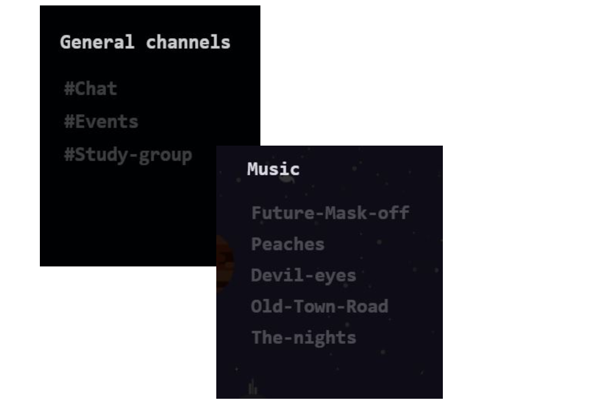
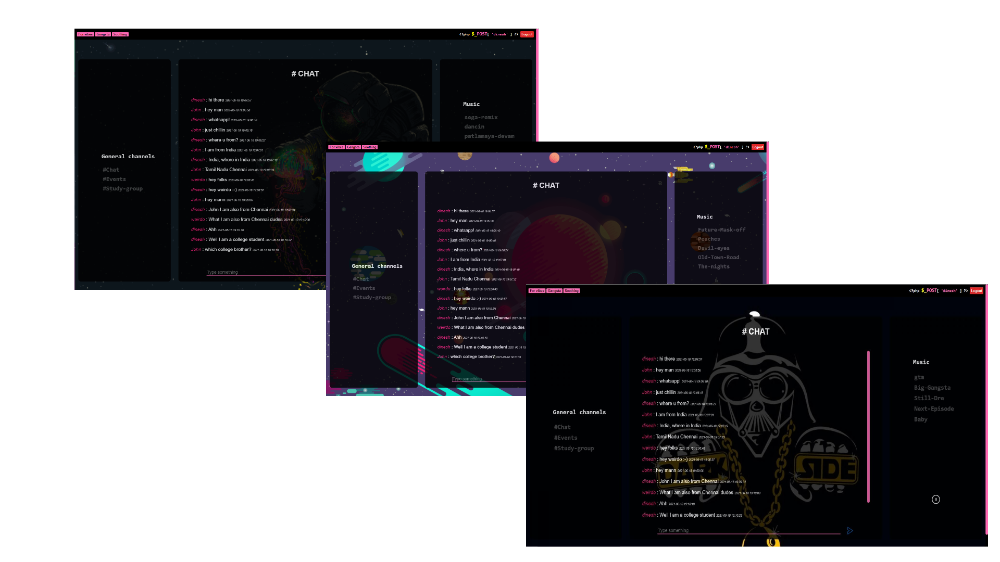

Many options

Want to chat with like minded people no problem we have got seperate channels to satisfy your need as well. We provide different chatting channels within global chat so that you can find the perfect group to chat with. Find the group that suits you to chat and start chatting!
Themes

We have provided various chatting channels under Global chat so that you can find the best group of friends to chat with. Well if thats not enough enjoy listening to music while chatting.The songs in the music player differ according to the theme, with each theme containing five tracks. Yes we have raised the bar to include a music player for you to listen because why not?